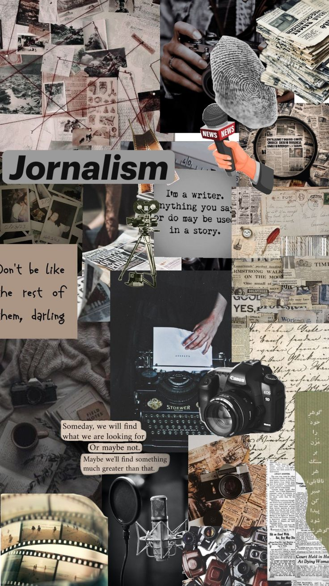
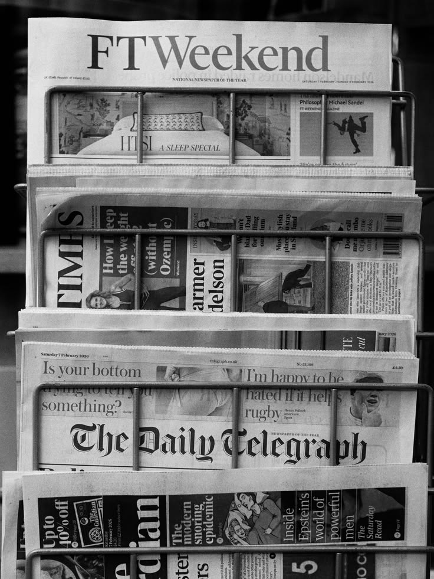
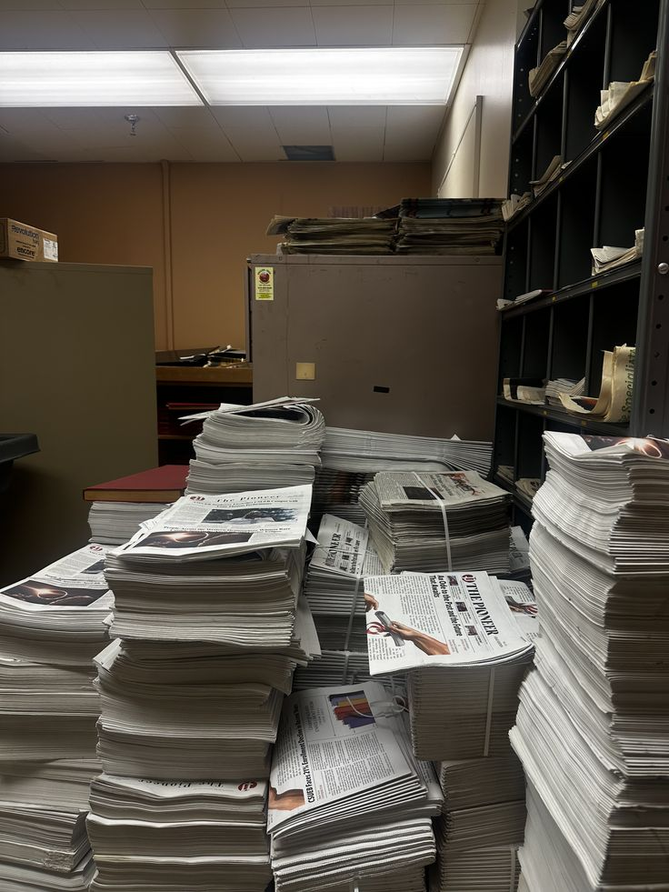

starting a substack felt like the logical next step. what wasn't logical was the weight of people actually reading it.
not even wali exists because i have things to say about nigerian politics and global movements and the way activism intersects with technology. i have thoughts about all of it and they usually arrive at 2am and demand to be written down. the substack became the container for that. a place to think out loud about the things that matter.
what i underestimated was the responsibility of having people listen. it's one thing to write into the void. it's another entirely when you realize your substack is being read by people who are making decisions based partly on the things you're saying. that your framework is informing someone else's activism. that careless thinking on your part could lead to real consequences.



i started fact-checking myself more aggressively. reading more widely. trying to represent different perspectives fairly even when i disagree with them. because the voice matters more when people are listening to it.
there's a specific kind of pressure in that. the pressure of trying to be responsible while maintaining the authenticity that makes the writing worth reading in the first place. because notevenwali is specifically not polished. it's not cleaned up for mass appeal. it's the raw version of my thinking. fragmented. sometimes contradictory. the kind of thing you write at 2am when you can't sleep because the world is wrong in some specific way.
the responsibility and the doubt are the same thing. the discomfort means i care about the work. i keep writing. keep wrestling with how to be authentic and responsible simultaneously. keep publishing at 2am and then letting myself second-guess it during the day. that tension is the actual practice.
← Back to Blog